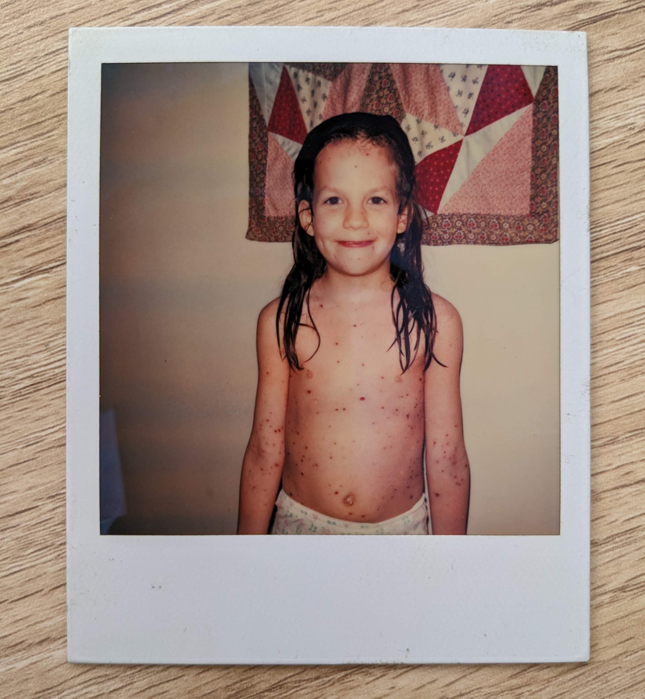
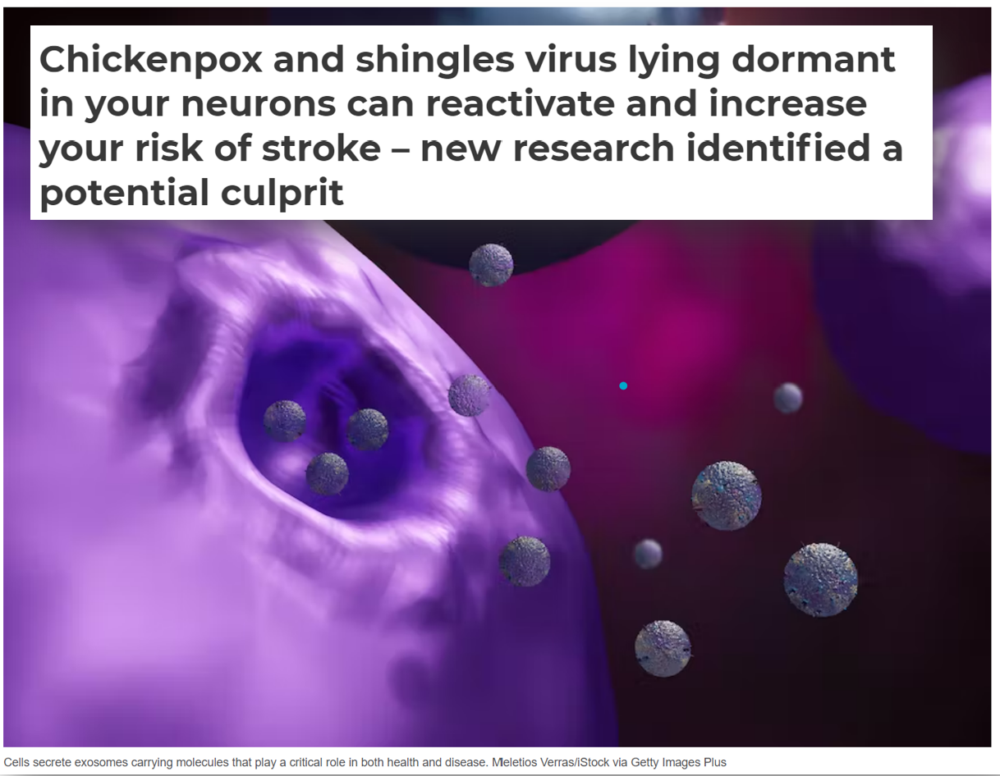

When I was 6, I caught chickenpox (this was before the chickenpox vaccine was widely available). I found the blisters quite itchy and painful, and I insisted that my parents take a picture of me so I could have a record of how many blisters I had. I stayed home from school for 2 weeks and was quite disappointed to miss being in the Amelia Bedelia school play (Amelia Bedelia was the protagonist of my favourite book series at the time, about a maid who takes everything literally). The only upside was getting to watch a VHS tape of the Pippi Longstocking movie on repeat. Once I recovered, I thought of chickenpox as annoying and unpleasant, but not a big deal in the scheme of things.

Long-term impacts of the virus behind chickenpox
Only much later did I learn that chickenpox is caused by the varicella zoster virus (VZV), which remains latent in our neurons after infection, and for 30% of people, unless vaccinated, will reactivate as shingles decades later. People who have shingles are at an 80% higher risk of stroke for up to a year afterwards, long after the acute symptoms of shingles have gone away. The stroke risk is particularly high for people who get shingles under the age of 40 (and this younger group is not eligible for the shingles vaccine).
The mechanisms by which VZV leads to this increased stroke risk are still being actively researched. In 2022, researchers discovered that VZV causes the formation of small sacs full of proteins which promote blood clots. (These small sacs are called exosomes and are used to transport various materials through our bloodstream.) These blood-clot-encouraging exosomes are still being produced 3 months after a shingles infection, and likely for longer (the study ended at 3 months).

VZV is not just linked to strokes, but also linked to developing multiple sclerosis or vascular dementia, as was found in a recent study analysing hundreds of thousands of medical records for associations between common viruses and diseases impacting the brain and nervous system. In the case of VZV, it is possible that the links to dementia and MS may occur through the reactivation of other viruses. That is another disturbing fact about viruses: they can quietly lie latent for years and then be reactivated by other viruses.
But aren’t infections inevitable?
I never gave much thought to how my brother and I had caught chicken pox, because for most of my life I assumed that viruses were a temporary discomfort, and that they were generally inevitable, just something that happens. However, in recent years, medical understanding of how pathogens spread has been upended, which in turn has profound implications for what we can do in response.
The flu, long believed to be spread through droplets from sneezes or through touching contaminated surfaces, has been shown to be released in small aerosols exhaled through ordinary breathing. These aerosols can remain suspended in the air, and others risk infection when they breathe them in. In work published in the prestigious PNAS, researchers found that neither sneezing nor coughing was necessary to spread flu, just ordinary breathing. This shift in understanding is important: it means that we have been relying on insufficient tools to stop viruses (e.g. hand washing and poorly fitting surgical masks alone will never be enough against airborne flu). Chickenpox, too, is spread through the air. As Professor Jonathan Gershoni of Tel Aviv University says in his course on viruses, “The most common direct route [of viral transmission] is when viruses become airborne and are subsequently inhaled. When people cough, sneeze, or simply exhale, they produce an aerosol of minute fluid droplets that are dispersed in the air around them.”
Fortunately, there are ways we can clean the air with improved ventilation (drawing in more outdoor air), filtration (removing harmful particles), and well-fitting masks in crowded public indoor spaces. For years, excellent ventilation and filtration systems have been used in pig farms, to avoid the spread of airborne porcine diseases, with some farms even employing a worker whose sole duty is the daily inspection and maintenance of the ventilation/filtration systems. Numerous studies document the effectiveness of hog farm filtration systems at reducing illness (see this fascinating thread for links), as well as the harms of poor ventilation for humans. Methods to clean the air have been implemented by wealthy elites at places including the World Economic Forum’s Davos Summit (attended by politicians and billionaires), the UK Parliament, Westminster Palace, and an Australian state parliament. However, unlike politicians and pigs, very few children or working class people have access to clean air in their schools or workplaces.
Rice University biochemistry and cell biology professor Alma Moon Novotny opened her series of in-depth immunology courses by singing the praises of not immunologists nor virologists, but of… engineers! Prof Novotny said, “I want to emphasize that an ounce of prevention is worth a pound of cure, and I will be praising engineers, particularly civil engineers because what they provide for us is clean water and proper sewage disposal.” She suggested that sanitation is the greatest medical advance of the last 150 years and went on to list other important engineering improvements that improve health: mosquito nets, houses that don’t let in as many insects (which can often carry pathogens), and an infrastructure system to transport needed medical supplies. She also spoke of how expensive our immune systems are in terms of ATP (our bodies’ energy currency). Despite the amazing intricacies of the human immune system, it is better to avoid getting sick.

Experts have been highlighting the extensive infrastructure overhaul London used to tackle cholera in the 19th century, similar to how cleaning indoor air could be part of a “plan to stop every respiratory virus at once”. Clean air could be the next clean water, revolutionising global health.
A New Way of Thinking
The idea that a common childhood virus can quietly hang out unnoticed in our nervous system for decades, reactivate to cause the blisters and nerve pain of shingles, and then months after the shingles blisters clear up cause blood clotting and strokes is mind-boggling to me, and stands in stark contrast to how I thought about viruses when I was younger.
The trajectory of my growing understanding of VZV is similar to my understanding of many viruses: I have moved from thinking of common viruses as both inevitable and discretely contained events (e.g. you are sick for a week or two, but then it’s over) to recognizing that:
- even common viruses can have long-reaching, surprising, and devastating consequences
- there is much more we can do to stop viral transmission than I previously realised
VZV is just one of many viruses that have surprised me. Research has now shown that several common viruses raise the risk of dementia and Alzheimer’s disease, and the virus behind mono / glandular fever (Epstein-Barr virus) causes Multiple Sclerosis. The fact that it is possible to reduce viral transmission makes it all the more urgent to understand the long-reaching consequences of viruses, since we have the power to act on what we learn.
Each risk on its own may not be that likely on the individual level: I am not suggesting that you should feel alarmed that you in particular will suffer a stroke after shingles, or that your elderly parent will catch the flu and then develop dementia, or that mono/glandular fever will lead to multiple sclerosis for you. However, it is important to think about this across the population, and across all these different virus-disease interactions. When you look at this research in aggregate, it suggests that many, many people are having their lives drastically impacted by diseases in which viruses play a role. Given what we know about both the risks of viruses and ways to reduce transmission, it is worthwhile to take effective measures like increasing ventilation, using air purifiers, and wearing N95/KF94/P2 masks in indoor public places to make our schools, workplaces, and healthcare settings safer.
This post is part 1 in a 3-part series. Please stay tuned for future posts!
I look forward to reading your responses. Create a free GitHub account to comment below.